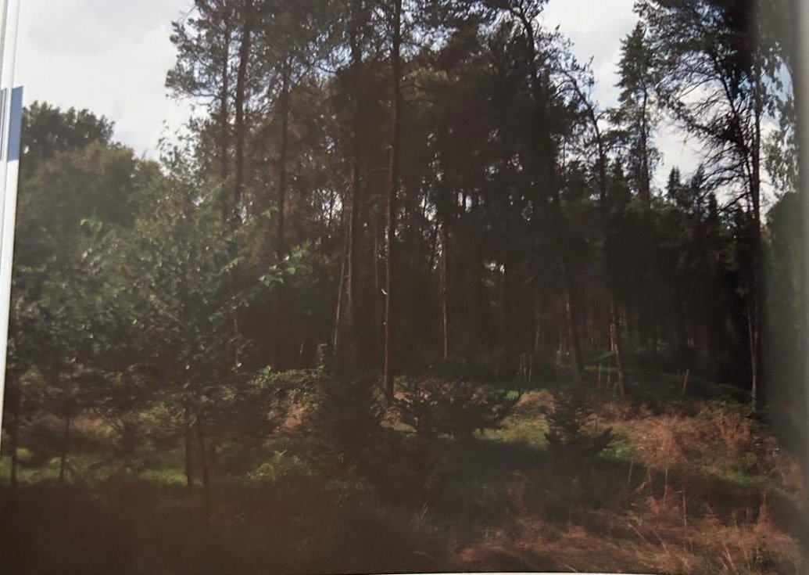

Groepen › Nieuwe Wereld
11. Noord-Canada, Boreaal bosgebied

In het hoge noorden van Canada overheerst de taiga, net zoals in Noord-Scandinavië en Siberië. Ze groeit er op schrale, soms moerassige, soms droge bodems, onder de lage temperaturen met zeer lange winters en korte zomers. Zwarte en Witte sparren nemen hier de plaats in van onze Europese Fijnspar. De Tamarack, een kleine en fijne lork, zoals bekend een van de weinige bladverliezende naaldhoutsoorten, neemt de drassige plaatsen in en Banksden of Struikden de droge. Pioniersoorten als Balsempopulieren, Papierberken, elzen en wilgen veroveren uitgestrekte terreinen na bosbranden. Gezien het korte groeiseizoen en de schrale omstandigheden worden de bomen niet zeer groot en niet zeer oud, maar de onafzienbare wouden leveren wel massaal houtpulp voor de papierindustrie. Diverse bosbessen- en heidesoorten bedekken de bodems.
Uit het boek
2,15 ha · 13 soorten · 1185 bomen
- Het boreale bos leeft van branden. Na heraanplant in 1959–72 en vanaf 2013 lijkt de groep nu een jong bos na een brand.
- Struikden en Amerikaanse lork komen in ons klimaat nooit tot volle ontwikkeling.

Bron: Geografisch Arboretum Tervuren. Een wereldreis rond bomen (2020), p. 134 en volgende.
Deelgroepen
- 11A – Yukon gebied
- 11B – West-Ontario tot Noord-Oost Alberta
- 11C – Mackenzie tot St-James Baai
Soorten in deze groep (13)
- Pinus banksianaStruikden · 285 bomen
- Abies balsameaBalsemzilverspar · 243 bomen
- Betula papyriferaPapierberk · 198 bomen
- Larix laricinaNoord-Amerikaanse lork · 131 bomen
- Picea marianaZwarte spar · 126 bomen
- Picea glaucaWitte spar · 89 bomen
- Alnus viridis subsp. crispa41 bomen
- Populus balsamiferaGewone balsempopulier · 39 bomen
- Pinus contorta var. latifolia14 bomen
- Picea x lutzii7 bomen
- Betula populifoliaPopulierberk · 5 bomen
- Diervilla lonicera5 bomen
- Abies lasiocarpaRotsgebergtezilverspar · 2 bomen
Tekst en foto: arboretum-tervuren.be (Koninklijke Schenking), met toestemming gebruikt.